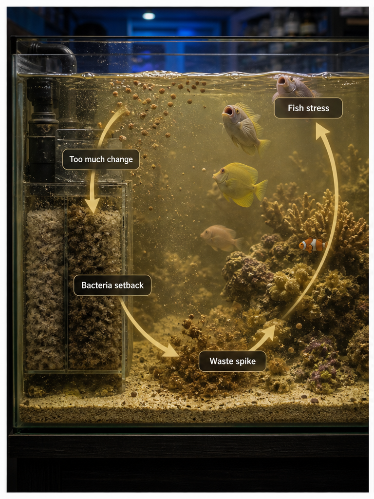
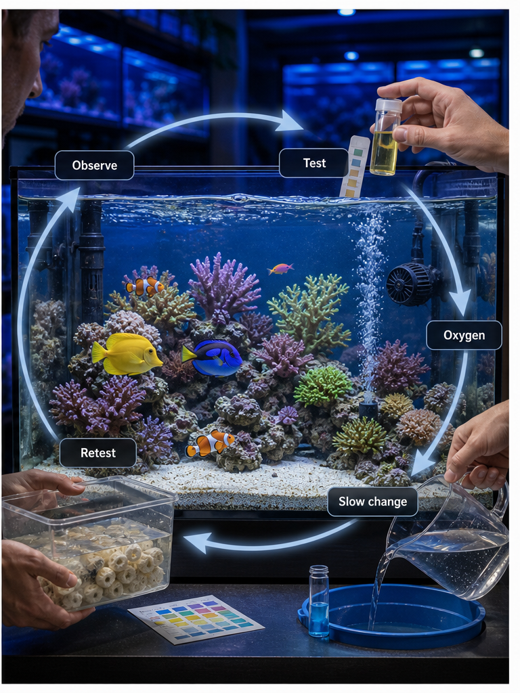

Protect filter bacteria
The filter is alive. Treat media like a colony, not disposable trash.
- Keep media wet
- Rinse in removed tank water
- Do not replace everything at once
 The Hidden ReefAquariums · Fish · Coral · Ponds
The Hidden ReefAquariums · Fish · Coral · Ponds
Most aquarium crashes are not one mystery event. They are a chain: too much change, weakened bacteria, low oxygen, rising waste, stressed animals, then panic fixes. Break the chain early.

These are simple, but they prevent the common chain reaction that turns a small issue into an emergency.
The filter is alive. Treat media like a colony, not disposable trash.
Low oxygen makes every other problem worse, especially during heat, medication, or power issues.
New food and new animals add waste before the system has proven it can process it.
Regular partial changes beat dramatic emergency swings.

Use the same calm loop whenever the tank starts drifting: observe the animals, test the water, add oxygen or flow if needed, make one slow correction, then retest before doing more.
Most crashes follow a trigger. The trigger is not always bad by itself; the problem is doing too much at once.
This can remove bacteria and shift chemistry on the same day.
The waste load rises faster than the biological filter can respond.
Warm water, outages, blocked filters, and medication can reduce oxygen fast.